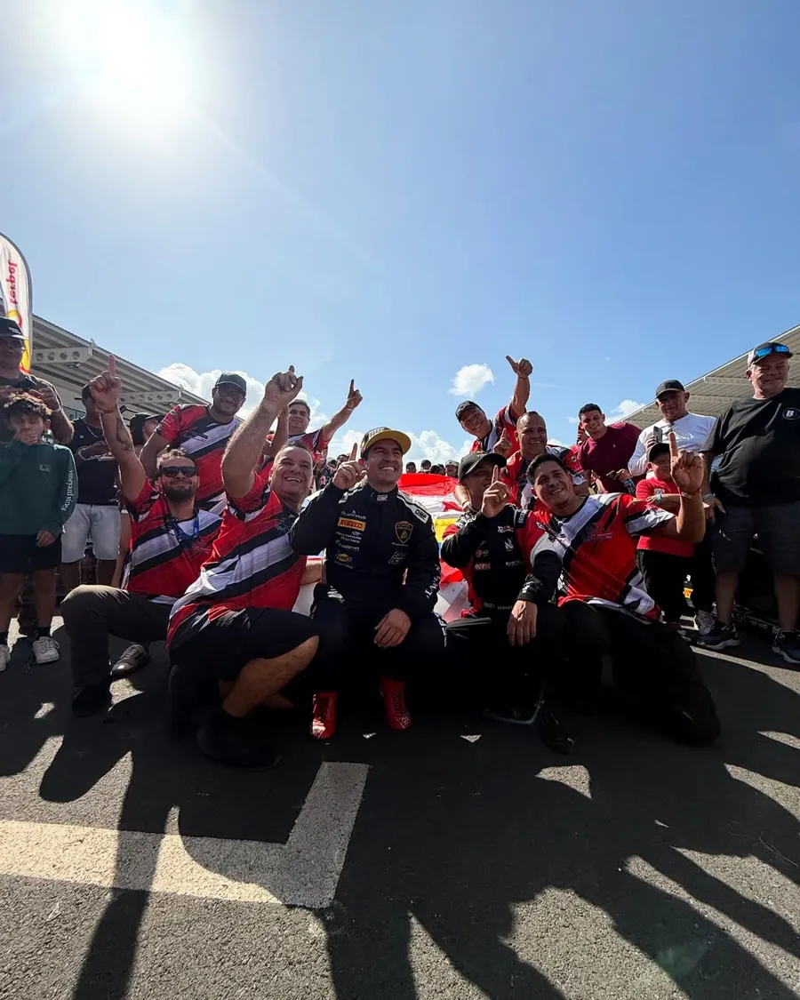

Sebastián Merchán
Dos años consecutivos en la final del GT Challenge de las Américas.
seguidores en Instagram
reproducciones en su post de mayor alcance
nivel de integración de marca demostrado
finales consecutivas del GT Challenge
Por qué una marca lo elegiría
Piloto ecuatoriano de GT que compite en el campeonato GT de Latinoamérica a bordo de un Lamborghini. Su contenido no se limita a mostrar el logo: demuestra vocería técnica y producto en uso, y su pieza de mayor alcance es un formato creativo propio.
- 2025Campeón del GT Challenge de las Américas 2025 (declarado)
- 2024 · 2025Dos años consecutivos en la final del campeonato
- 2026Temporada GT Challenge: Panamá, Guyana, Barbados y México
- 2026Experiencias VIP con marcas aliadas en pista
Lo que ya construye en redes
Piezas reales de su cuenta y de Pro Motion, con las reproducciones que generaron.
Quién lo sigue
84 % hombres · 16 % mujeres (entre quienes Instagram clasifica). Núcleo de 25 a 54 años: 88 %.
¿Qué marca encaja con Sebastián?
Toca un sector para ver una idea de activación basada en lo que su contenido ya demuestra.
Elige un sector.


Ficha tentativa elaborada por Pro Motion Sport Marketing con datos públicos de Instagram (octubre de 2026) y la auditoría ProMatch del 9 de agosto de 2026. Los logros marcados como “declarado” fueron entregados por el deportista o su equipo. El puntaje ProMatch mide la preparación comercial observada en el contenido, no la probabilidad de conseguir un auspicio, y no implica un acuerdo comercial vigente.
Diseñemos una activación con Sebastián
Recibe una propuesta de activación con entregables, calendario y rango de inversión.